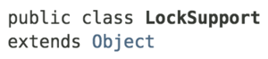
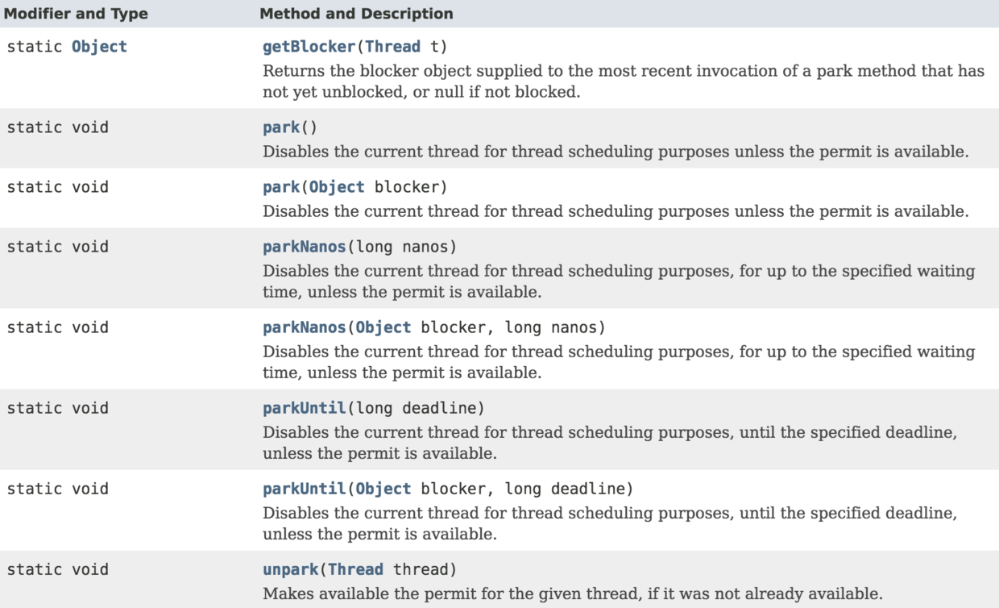

LockSupport类，是JUC包中的一个工具类，是用来创建锁和其他同步类的基本线程阻塞原语。（Basic thread blocking primitives for creating locks and other synchronization classes）
LockSupport类的核心方法其实就两个：park()和unark()，其中park()方法用来阻塞当前调用线程，unpark()方法用于唤醒指定线程。
这其实和Object类的wait()和signial()方法有些类似，但是LockSupport的这两种方法从语意上讲比Object类的方法更清晰，而且可以针对指定线程进行阻塞和唤醒。
LockSupport类使用了一种名为Permit（许可）的概念来做到阻塞和唤醒线程的功能，可以把许可看成是一种(0,1)信号量（Semaphore），但与 Semaphore 不同的是，许可的累加上限是1。
初始时，permit为0，当调用unpark()方法时，线程的permit加1，当调用park()方法时，如果permit为0，则调用线程进入阻塞状态。
来看一个例子：
假设现在需要实现一种FIFO类型的独占锁，可以把这种锁看成是ReentrantLock的公平锁简单版本，且是不可重入的，就是说当一个线程获得锁后，其它等待线程以FIFO的调度方式等待获取锁。
public class FIFOMutex {
private final AtomicBoolean locked = new AtomicBoolean(false);
private final Queue<Thread> waiters = new ConcurrentLinkedQueue<Thread>();
public void lock() {
Thread current = Thread.currentThread();
waiters.add(current);
// 如果当前线程不在队首，或锁已被占用，则当前线程阻塞
// NOTE：这个判断的意图其实就是：锁必须由队首元素拿到
while (waiters.peek() != current || !locked.compareAndSet(false, true)) {
LockSupport.park(this);
}
waiters.remove(); // 删除队首元素
}
public void unlock() {
locked.set(false);
LockSupport.unpark(waiters.peek());
}
}
测试用例：
public class Main {
public static void main(String[] args) throws InterruptedException {
FIFOMutex mutex = new FIFOMutex();
MyThread a1 = new MyThread("a1", mutex);
MyThread a2 = new MyThread("a2", mutex);
MyThread a3 = new MyThread("a3", mutex);
a1.start();
a2.start();
a3.start();
a1.join();
a2.join();
a3.join();
assert MyThread.count == 300;
System.out.print("Finished");
}
}
class MyThread extends Thread {
private String name;
private FIFOMutex mutex;
public static int count;
public MyThread(String name, FIFOMutex mutex) {
this.name = name;
this.mutex = mutex;
}
@Override
public void run() {
for (int i = 0; i < 100; i++) {
mutex.lock();
count++;
System.out.println("name:" + name + " count:" + count);
mutex.unlock();
}
}
}
上述FIFOMutex 类的实现中，当判断锁已被占用时，会调用LockSupport.park(this)方法，将当前调用线程阻塞；当使用完锁时，会调用LockSupport.unpark(waiters.peek())方法将等待队列中的队首线程唤醒。
通过LockSupport的这两个方法，可以很方便的阻塞和唤醒线程。但是LockSupport的使用过程中还需要注意以下几点：
park方法的调用一般要方法一个循环判断体里面。 while (waiters.peek() != current || !locked.compareAndSet(false, true)) {
LockSupport.park(this);
}
park方法是会响应中断的，但是不会抛出异常。(也就是说如果当前调用线程被中断，则会立即返回但不会抛出中断异常)park(Object blocker)，会传入一个blocker对象，所谓Blocker对象，其实就是当前线程调用时所在调用对象（如上述示例中的FIFOMutex对象）。该对象一般供监视、诊断工具确定线程受阻塞的原因时使用。类声明：

方法声明：
